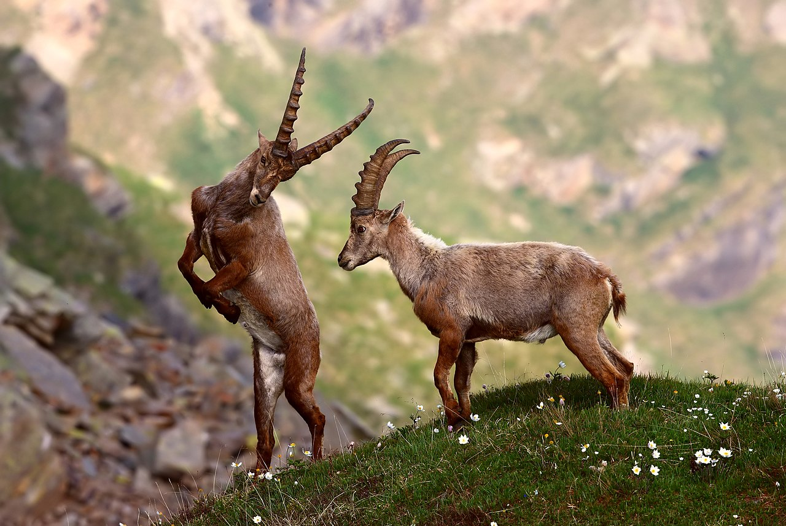
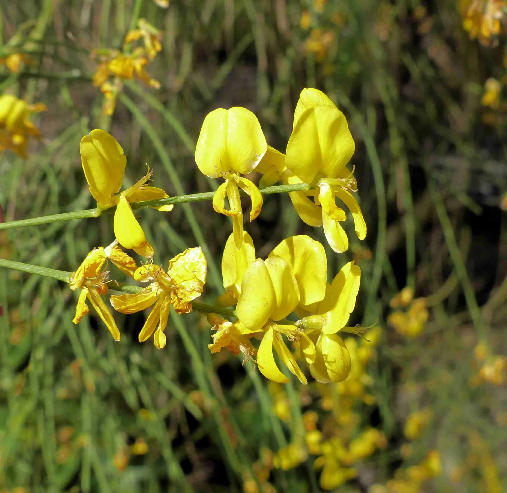
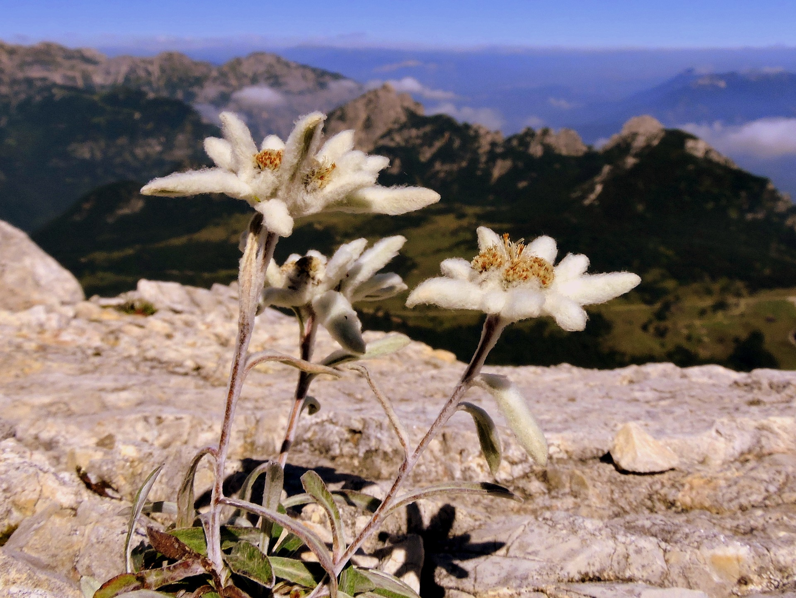
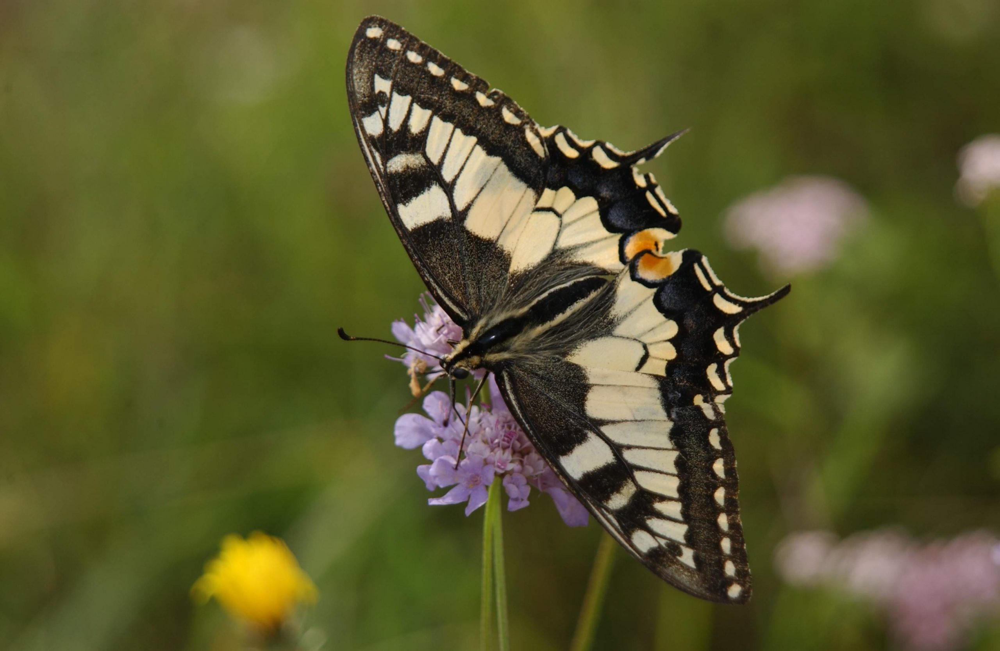

Flora e Fauna
Una panoramica sulla flora e fauna dei principali parchi italiani, tra specie rare, simboli e habitat unici.
Lo stambecco e i grandi abitanti del Gran Paradiso
Il Parco Nazionale del Gran Paradiso ospita una straordinaria varietà di fauna alpina. Simbolo del parco è lo stambecco, salvato dall’estinzione e oggi facilmente avvistabile. Accanto a lui, la marmotta, con i suoi fischi inconfondibili, popola i prati alpini. Nei cieli, l’aquila reale regna sovrana, offrendo spettacolari voli tra le cime. La flora è altrettanto ricca, con praterie punteggiate da genziane, stelle alpine e rododendri. Gli ambienti variano dai boschi di larici e abeti alle aree glaciali, creando un habitat ideale per questa biodiversità unica.

Ginestre vulcaniche e rapaci sulle pendici dell’Etna
Il Parco dell’Etna offre una biodiversità sorprendente, nonostante l’asprezza del terreno vulcanico. Le pendici del vulcano sono colonizzate dalla ginestra dell’Etna, una pianta resistente che fiorisce su terreni lavici, creando un contrasto spettacolare. Tra gli animali, la volpe rossa è una presenza comune, spesso avvistata lungo i sentieri. Nei cieli vola il falco pellegrino, simbolo di agilità e potenza. I boschi di querce e castagni ospitano una ricca fauna, mentre le fasce altitudinali più elevate offrono un paesaggio lunare unico.

Il pino loricato e il lupo appenninico del Pollino
Il Parco Nazionale del Pollino è noto per il suo simbolo botanico, il pino loricato, che si erge maestoso sulle rocce calcaree. Questa specie rara, con la sua corteccia a scaglie, è un monumento vivente. Tra gli animali, spicca il lupo appenninico, che si aggira silenzioso tra i boschi, e il cervo, visibile nelle radure. Le praterie ospitano orchidee selvatiche, che colorano il paesaggio con tonalità vivaci. Questa varietà di flora e fauna riflette la straordinaria biodiversità di uno dei parchi più selvaggi d’Italia.

Stelle alpine e farfalle rare delle Dolomiti Bellunesi
Le Dolomiti Bellunesi sono un paradiso di biodiversità. Tra i prati alpini fiorisce la stella alpina, simbolo delle montagne, accompagnata da genziane e gigli. Il camoscio alpino è un abitante caratteristico delle alte quote, mentre nei boschi si possono avvistare cervi e caprioli. Tra gli insetti, spiccano le farfalle rare, che trovano rifugio nei microambienti del parco. Le foreste di faggi e abeti rossi, insieme ai pendii rocciosi, creano un ecosistema unico, ideale per la sopravvivenza di molte specie endemiche delle Dolomiti.

